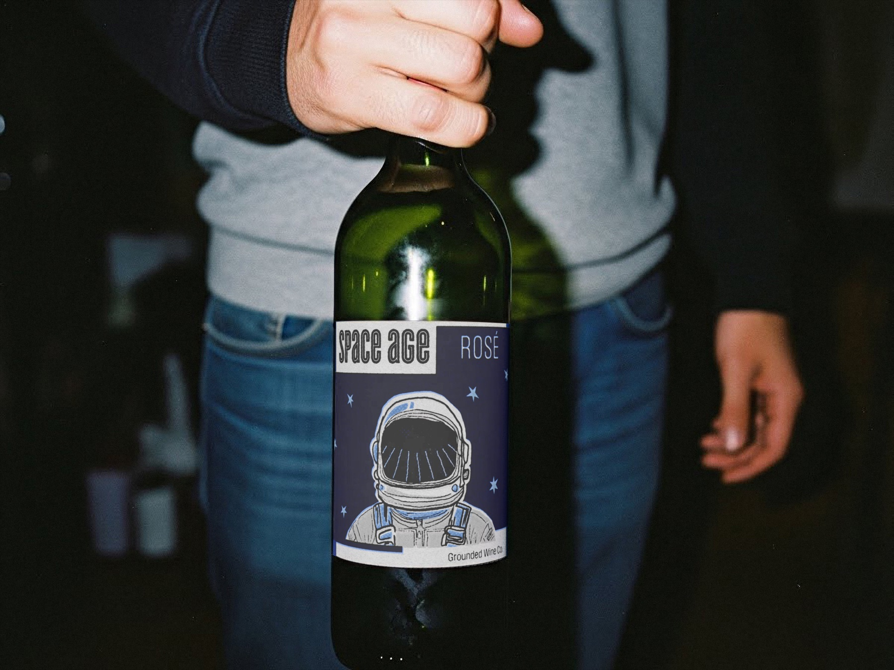
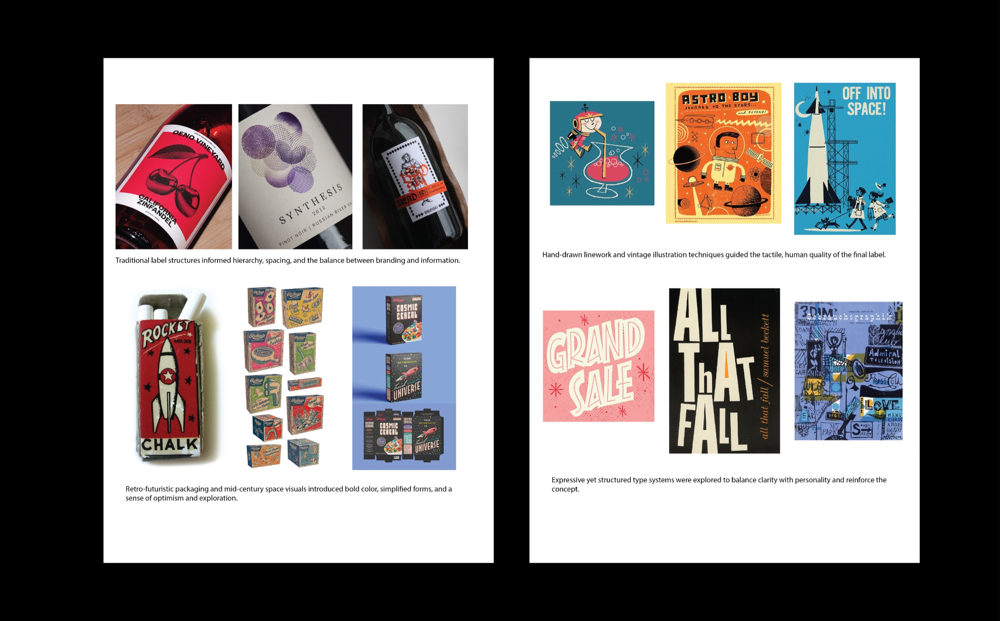
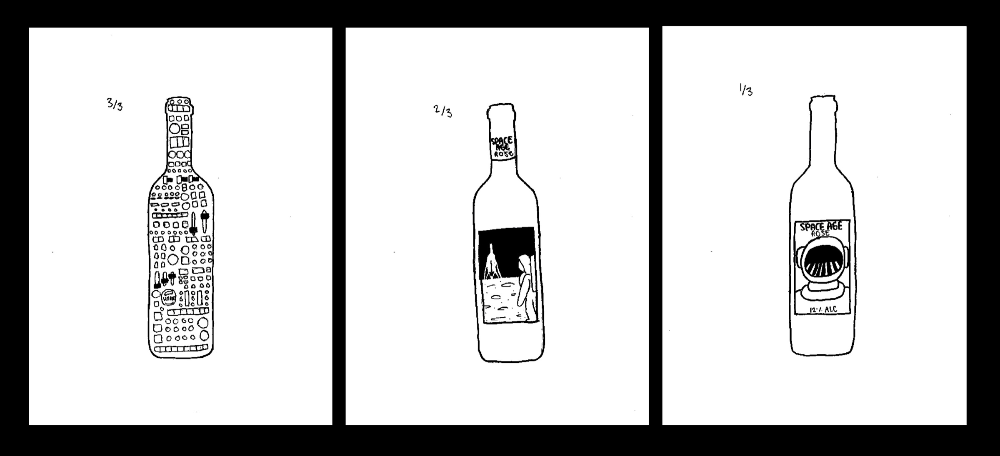
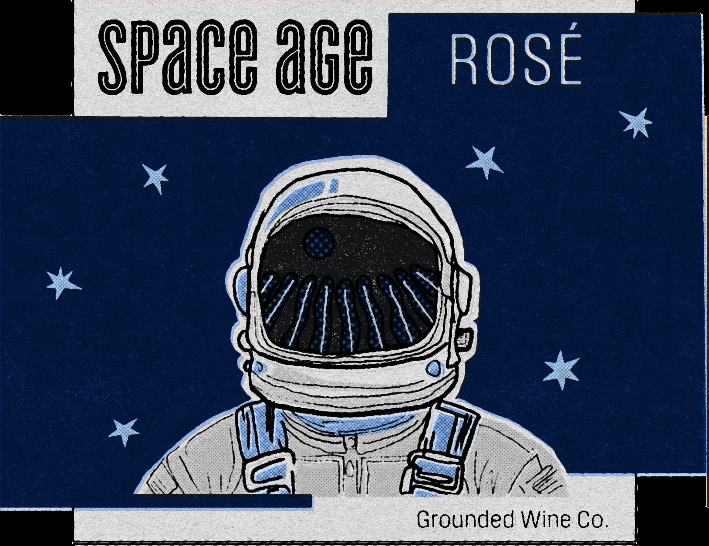
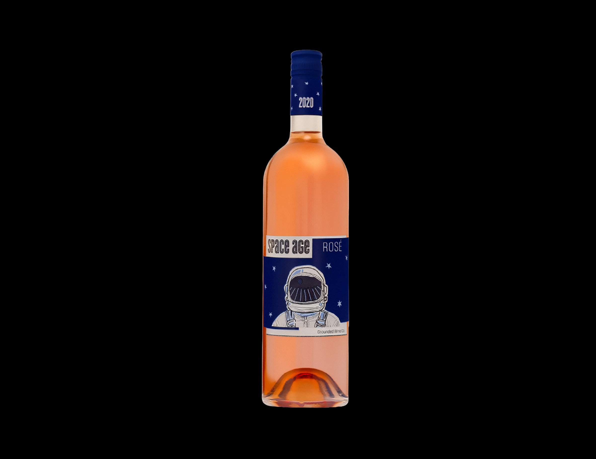
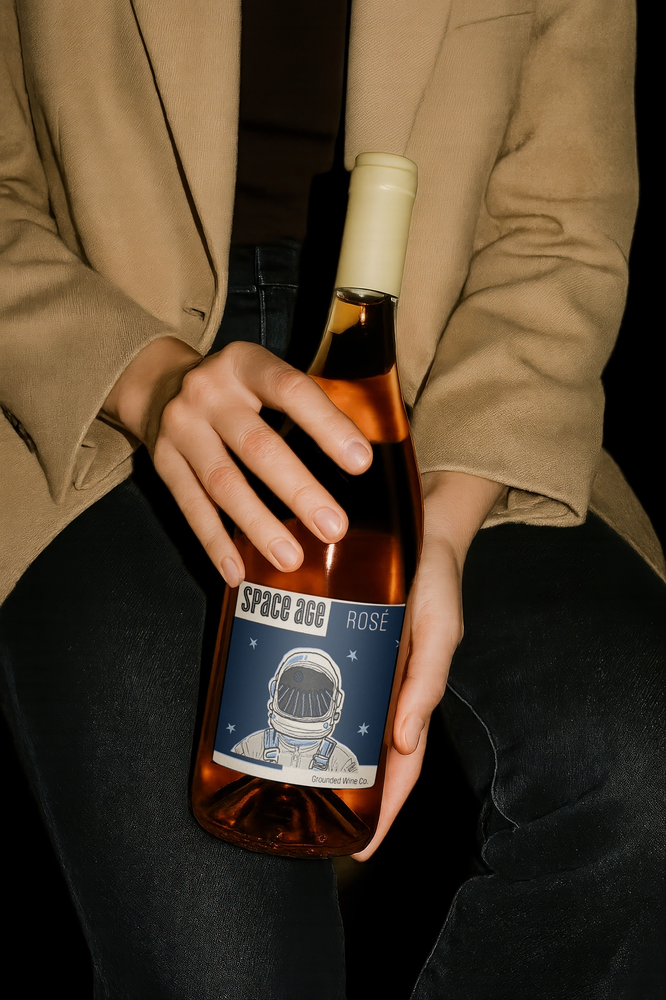
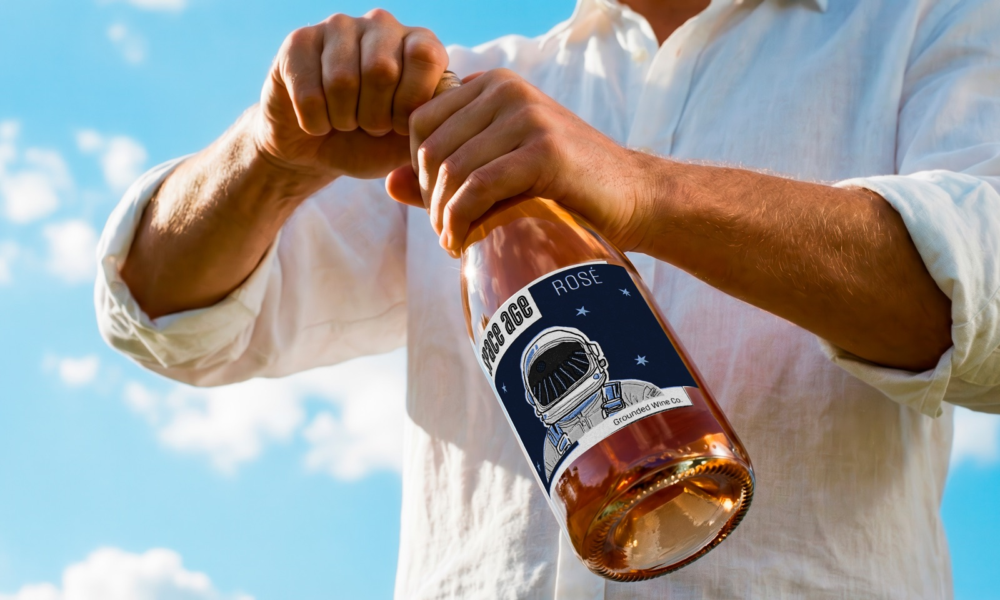

Space Age

A rosé wine label and bottle capsule combining retro space imagery, an astronaut illustration, and a vineyard reflected in the visor.
- Deliverables
- Front and back labels, astronaut illustration, bottle capsule, prototypes
Space Age brings together the visual language of vintage science fiction and the agricultural origins of wine. The concept uses an astronaut as the main image, creating an unexpected direction for a rosé label while connecting the imagined setting of space with the vineyard through the reflection in the visor.
The packaging needed to establish a clear focal point, communicate the wine type, and carry the same visual idea from the label to the bottle capsule.
- Wine label design
- Astronaut illustration
- Front and back labels
- Bottle capsule design
- Bottle mockups
Wine, meet outer space.
I gathered references for wine labels and for retro space imagery, looking for where the two could meet without losing the product inside the concept.

Finding the astronaut.
Sketches worked out the astronaut as the focal point, and how a vineyard could be reflected in the visor.





The front label uses a deep blue starfield as the setting for a central astronaut in a white suit. A vineyard appears reflected in the visor, connecting the space theme back to the wine's agricultural origins.
The product name, Space Age, runs vertically along the left side in white retro-inspired lettering. The smaller Rosé designation sits on the right, allowing the astronaut to remain the main focal point while keeping the wine type identifiable.
On the finished bottle, the deep blue label contrasts with the pink-orange wine visible through the clear glass. This creates a color relationship between the label and the product rather than treating the packaging as an isolated graphic. A matching navy capsule extends the blue onto the bottle neck, with the year printed in white.
The final design relies on a clear focal point, restrained supporting typography, and the contrast between the cool label and warm wine. These choices give the bottle a recognizable retro-futuristic character while keeping the product presentation cohesive.